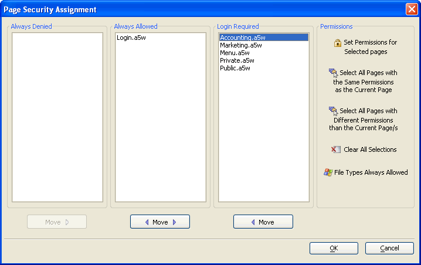

Defining Page Security - Tutorial
The third step when implementing the web security framework is to define which of your pages will fall into these three categories:
pages that web users can never open (Always Denied)
pages that web users can open without login (Always Allowed)
pages that web users can open after successful login (Login Required)
Display the Web Projects Control Panel.
Click Security to display the Web Security dialog.
Select Page Security and click OK to display the Page Security Assignment dialog. This dialog initially lists all your pages except the Login.A5W page in the left-most Always Denied column.

Select all the entries in the Always Denied column and click Move > Move Selected to Login Required.
Select "Accounting.a5w" and "Private.a5w" in the Login Required list.
Click Set Permissions for Select Pages.
Check Accounting.
Click OK.
Select "Marketing.a5w" and "Private.a5w" in the Login Required list.
Click Set Permissions for Select Pages.
Check Marketing.
Click OK.
Click OK.
Limitations
Web publishing applications only.
See Also